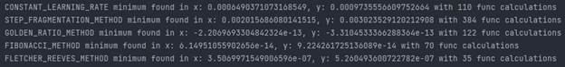
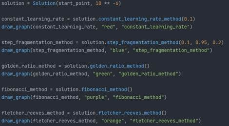
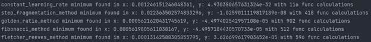
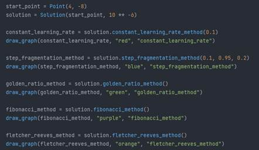

Министерство науки и высшего образования Российской Федерации
федеральное государственное автономное образовательное учреждение высшего образования
«НАЦИОНАЛЬНЫЙ ИССЛЕДОВАТЕЛЬСКИЙ УНИВЕРСИТЕТ ИТМО»
Отчет
по лабораторной работе №2
по дисциплине «Прикладная математика»
Авторы: Юрпалов Сергей и Кошкин Михаил
Факультет: ИТиП
Группа: М32051
Санкт-Петербург 2022
Описание:
1. Реализуйте метод градиентного спуска.
2. Оцените, как меняется скорость сходимости, если для поиска величины шага
использовать различные методы:
(a) постоянная величина шага (в зависимости от величины);
(b) метод дробления шага;
(c) метод золотого сечения;
(d) метод Фибоначчи;
(e) метод линейного поиска (***).
3. Проанализируйте траекторию реализованных методов
для нескольких квадратичных функций: придумайте две-три квадратичные
двумерные функции, на которых работа метода будет отличаться, рассмотрите
различные начальные приближения, нарисуйте графики с линиями уровня
функций и траекториями методов.
4. Проанализируйте, зависит ли сходимость методов от выбранной точки
начального приближения.
5. Реализуйте один из методов сопряженных направлений (любой, по выбору):
(a) метод сопряженных градиентов;
(b) метод Флетчера-Ривса;
(c) метод Полака-Рибьера.
6. Сравните траектории, полученные методом градиентного спуска и методом
сопряженных направлений, при фиксированном начальном приближении.
7. Для защиты лабораторной работы необходимо знать описание методов на
языке математики, пояснять полученные результаты, а также уметь обосновать
разумность примененных Вами методов для данных функций.
8. По результатам выполнения лабораторной работы необходимо подготовить
отчет. Отчет должен содержать ссылку на реализацию, необходимые тесты,
таблицы и рисунки.
Решение:
Ссылка на реализацию:
https://github.com/wilfordaf/IS-2020-5_Sem-DevTools-lab1/tree/main/lab-2
Проанализируйте траекторию реализованных методов
для нескольких квадратичных функций: придумайте две-три квадратичные
двумерные функции, на которых работа метода будет отличаться, рассмотрите
различные начальные приближения, нарисуйте графики с линиями уровня
функций и траекториями методов.
1) F(x, y) = x2 + y2
Настройки запуска функции:

Начальное приближение: (4, -8)
Начальное приближение (2, 3)

2) F(x, y) = x2 + 5y2
Настройки запуска функции:

Начальное приближение: (6, 3)

Начальное приближение (7, -3)

3) F(x, y) = 5x2 + 3y2
Настройки запуска функции:

Начальное приближение: (4, -8)
Начальное приближение (-3, -6)